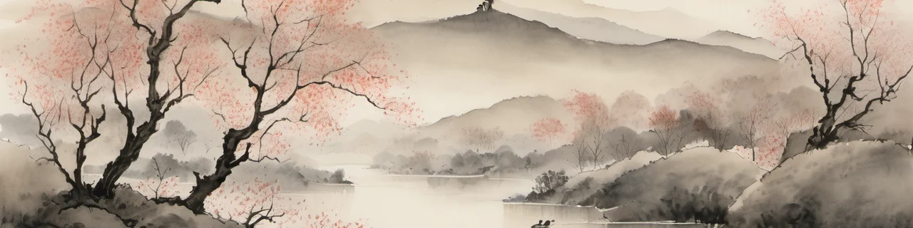

立春
2月3日—5日
东风解冻，万物起始。
二十四章
二十四个名字，二十四首诗。按四季分组排列，每个节气都标注了大致的公历日期—— 每年会有一两天的浮动，具体以天文台发布为准。

2月3日—5日
东风解冻，万物起始。
2月18日—20日
冰雪消融，春雨润物。
3月5日—7日
春雷乍动，蛰虫惊醒。
3月20日—22日
昼夜均分，燕子归来。
4月4日—6日
气清景明，踏青祭祖。
4月19日—21日
雨生百谷，播种时节。
5月5日—7日
万物繁茂，蛙声一片。
5月20日—22日
麦粒渐满，蚕桑正忙。
6月5日—7日
有芒可种，梅雨纷纷。
6月21日—22日
白昼最长，日影最短。
7月6日—8日
温风至，蟋蟀居壁。
7月22日—24日
湿热交蒸，蝉鸣正盛。
8月7日—9日
凉风初起，梧桐报秋。
8月22日—24日
暑气渐止，秋意渐浓。
9月7日—9日
露凝而白，秋凉渐深。
9月22日—24日
昼夜再均，桂子飘香。
10月8日—9日
露气寒冷，菊有黄华。
10月23日—24日
初霜降临，柿子红了。
11月7日—8日
水始冰，地始冻。
11月22日—23日
天渐寒，雪初飘。
12月6日—8日
雪盛时，围炉夜话。
12月21日—23日
白昼最短，数九开始。
1月5日—7日
冷气积久，腊梅初绽。
1月20日—21日
岁末极寒，年味渐浓。